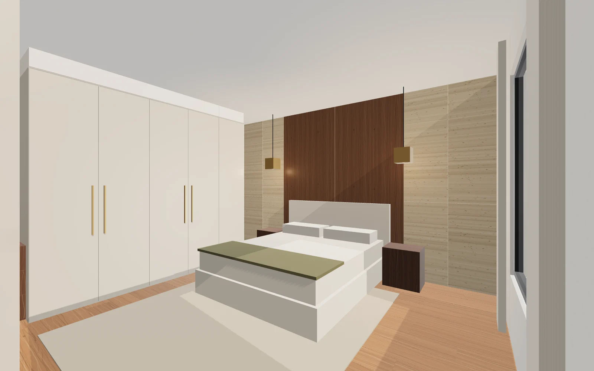

Type the change. Approve it. Open the .3dm.
The five instructions from your brief, running against an editable model of a sample bedroom: every edit is shown before it is applied, checked against simple design rules, saved as a version and written as a Rhino file you can open.
Versions
Instructions
Offline parser in this demo; production sends the same tool schema to OpenAI.
Phase 1. From a rendering to an editable model
- Sheet
- A-101
- Status
- Measured on a test rendering
A designer clicks about 29 points on the rendering. Edges that run along the two room axes meet at two vanishing points, which give the lens and the camera angle. One dimension from your drawings (here the ceiling height) sets the scale. Everything else is then placed in millimetres.
- With one true dimension, 8 of the 10 dimensions come back within ±2.9% at one pixel of click error.
- Anything measured from the west wall is weak, because this camera sees that wall edge-on behind the wardrobe: wardrobe front from wall ±136 mm, bed centre from west wall ±103 mm. Wardrobe depth is the dimension instruction 3 changes, so it comes from the joinery drawing or a second view, not from the image.
- Without drawings, every dimension scales with the guess: assuming a 3,000 mm ceiling instead of 2,900 makes the room 167 mm too wide.
- Lens shift, often used to keep verticals straight, skews the result by 320 mm on the room width if the image centre is assumed; taking the centre from the horizon brings it back to 0 mm.
| Dimension | True | 0.5 px | 1 px | 2 px | 3 px |
|---|---|---|---|---|---|
| Room width (wall to wall) | 4,800 | ±42 | ±83 | ±166 | ±260 |
| Wardrobe front from wall | 620 | ±66 | ±136 | ±274 | ±419 |
| Wardrobe run to feature wall | 3,680 | ±16 | ±32 | ±64 | ±96 |
| Wardrobe height | 2,700 | ±23 | ±47 | ±97 | ±149 |
| Bed width | 1,900 | ±18 | ±36 | ±75 | ±109 |
| Bed + headboard length | 2,230 | ±17 | ±32 | ±64 | ±95 |
| Bed centre from west wall | 2,400 | ±52 | ±103 | ±207 | ±325 |
| Bed height | 320 | ±5 | ±9 | ±18 | ±27 |
| Travertine slab width | 600 | ±8 | ±15 | ±31 | ±46 |
| Travertine slab height | 1,200 | ±4 | ±9 | ±17 | ±26 |
The model behind Version 1
The measurements fill one design spec: room, openings, flooring, three feature-wall zones, wardrobe and the units beside it, bed, bedside tables, rug and lights. A generator turns the spec into 184 closed solids on named layers, with the studio's material names and the parameters stored on each object as Rhino user text. The same spec is stored inside the .3dm, so any saved version can be rebuilt or edited later.
Layers in Version-1.3dm, with object counts
- Architecture / Ceiling1
- Architecture / Openings6
- Architecture / Walls9
- Finishes / Feature wall24
- Finishes / Flooring112
- Furniture4
- Furniture / Soft furnishings7
- Joinery / Adjacent units7
- Joinery / Wardrobe10
- Lighting4
Phase 2. The agent and the Rhino connection
- Sheet
- A-201
- Status
- Built and tested outside Rhino
Why the model gets tools, not Rhino
McNeel's Rhino AI groups its tools as read-only, modify and destructive, and running scripts or saving files sit in the destructive group. Unchecking a group only hides it from agents inside Rhino's own panel; an external client connected over MCP still sees every tool. So in this design the app is the only MCP client. The model can only ask for the 9 actions below, the app checks every argument, and Rhino runs one of 7 reviewed Python functions with plain data. The script line sent to Rhino carries the arguments as base64, so a crafted label cannot become code.
Codex belongs in development: writing new tool functions and their tests. It is not given the client's file at run time.
Checks before anything reaches Rhino
Wardrobe depth range, plank width range, feature wall zones adding up to the wall, a 700 mm walkway between joinery and the bed, clashes between solids, and floor coverage. When a change fails, the agent says why and proposes the largest change that passes.
Increase the wardrobe depth by another 300 mm. wardrobe depth 1000 mm is outside 450-800 mm; walkway between wardrobe door and bed base would be 430 mm, below the 700 mm minimum. The most that passes is +30 mm.
| Tool | What it does |
|---|---|
set_flooring | Wood, plank width (or the next stock width for "wider"), plank length |
set_wall_treatment | Left, centre, right or all of the feature wall: travertine, wood panels, fluted oak, plaster with shelf |
change_dimension | Depth, width, height or length of joinery and furniture, by an amount or to a value |
set_material | Material of an element, from the studio library only |
generate_variants | Up to four checked alternatives for the feature wall |
render_view | Hero, bed, wardrobe or plan view |
save_version | Writes the approved model as a new .3dm with its spec inside |
rollback | Restores a saved version |
ask_clarification | Used for anything unclear, unsupported or destructive |
How well instructions become tool calls
- Offline parser, held-out phrasings (run once)
- 14 of 20 exact; 4 asked a question instead, 1 missed part of a two-part instruction, 1 disputed label
- Earlier held-out round, before tuning
- 12 of 20
- Phrasings it was written against
- 50 of 50
- OpenAI path
- Same tool schema, eval script included; not run here (no API key in the demo)
The brief's instructions, as the agent handled them
Change the bedroom flooring to light walnut with wider planks.
- flooring material: Oak natural → Walnut light
- plank width (mm): 180 → 240
Approved. Rhino: 0 added, 28 removed, 84 changed.
Replace the central wall treatment with large-format wood panels while retaining travertine on either side.
- center zone treatment: travertine → large-format wood panels
- center zone material: Travertine classic → Smoked oak veneer
- center cladding depth 20 → 18 mm
- Bed and bedside tables move 2 mm to stay against the headboard wall
Approved. Rhino: 2 added, 12 removed, 13 changed.
Increase the wardrobe depth by 100 mm and adjust the adjacent cabinetry.
- wardrobe depth (mm): 600 → 700
- Tall linen cabinet depth 600 → 700 mm (fronts stay flush)
- Drawer unit depth 450 → 550 mm (front stays 150 mm behind the wardrobe)
- Walkway to the bed 830 → 730 mm (minimum 700)
Approved. Rhino: 0 added, 0 removed, 17 changed.
Increase the wardrobe depth by another 300 mm.
- wardrobe depth (mm): 700 → 1000
- Tall linen cabinet depth 700 → 1000 mm (fronts stay flush)
- Drawer unit depth 550 → 850 mm (front stays 150 mm behind the wardrobe)
- Walkway to the bed 730 → 430 mm (minimum 700)
Blocked: wardrobe depth 1000 mm is outside 450-800 mm; walkway between wardrobe door and bed base would be 430 mm, below the 700 mm minimum. The most that passes is +30 mm.
Phase 3. Interface, renders and versions
- Sheet
- A-301
- Status
- Built; renders are previews

Drag to compare. Version 2 is the result of instructions 1 to 3 and 5.
Instruction 4: three alternatives for the feature wall, each checked and saved as its own file.
| File | Version | Objects | Closed solids | With user text | Rebuild difference | Size | Download |
|---|---|---|---|---|---|---|---|
| Version-1.3dm | Version 1Reconstructed from the rendering | 184 | 184 | 184 | 0 mm | 2.3 MB | .3dm |
| Version-2.3dm | Version 2Walnut floor, wider planks; wood panel centre; wardrobe +100 mm | 146 | 146 | 146 | 0 mm | 1.8 MB | .3dm |
| Variant-A.3dm | Option AFluted oak centre | 205 | 205 | 205 | 0 mm | 2.6 MB | .3dm |
| Variant-B.3dm | Option BLime plaster with walnut shelf, silver travertine sides | 147 | 147 | 147 | 0 mm | 1.9 MB | .3dm |
| Variant-C.3dm | Option CFull-width smoked oak panels | 136 | 136 | 136 | 0 mm | 1.7 MB | .3dm |
All files pass: millimetre units, every object a closed solid with element, part and material user text, and a rebuild difference of 0 mm between the file and the Python generator. In Version 2 the wardrobe reads 700 mm deep, the tall unit 700 mm and the drawer unit 550 mm; planks are 240 mm in Walnut light.
Phase 4. Testing, handover and the proof of concept
- Sheet
- A-401
- Status
- Measured
| Brief | In this demo | In your PoC |
|---|---|---|
| One rendering reconstructed | Test rendering, errors measured (A-101) | Your rendering and drawings |
| Agent connected | Offline parser; Rhino functions tested outside Rhino | OpenAI and your Rhino 8 over MCP |
| Three or more conversational changes | Instructions 1 to 3 approved, one blocked with a reason | The same five instructions on your room |
| Updated visualisations | three.js previews | Rhino Render from saved views |
| Saved editable model | 5 .3dm files, read back and checked | .3dm per version in your project folder |
Tests and quality of this page
- Unit tests (Node)
- 20 passed
- Rhino-side tests (Python, rhino3dm)
- 6 passed
- Browser tests
- 7 passed
- Accessibility (axe) at 390, 820, 1440 px
- 0 violations
- Lighthouse on mobile settings, median of 3
- Performance 98, accessibility 100, best practices 100
Handover
- Source with tests, the Rhino Python functions and the setup guide for Rhino MCP
- Material library and design rules as editable files
- Recorded walkthrough and a live training session for the design team
- All code, models and documents owned by you
What is measured here, and what is not
Measured
- Dimension recovery on a synthetic rendering with known truth, 2,000 repeats per click-error level
- .3dm files: units, layers, closed solids, user text, embedded spec, rebuild by the Python generator (0 mm)
- Manual-edit detection on a real .3dm: a 50 mm move, a deleted object and an extra object
- Instruction parsing on 50 written and 20 held-out phrasings
- Design checks, approvals, versions and rollback (hashes match after restore)
Not measured
- Running inside Rhino 8 over MCP: no Rhino licence in this environment
- Real client renderings, which can be retouched or composited
- OpenAI accuracy and cost: the eval script is ready but needs your key
- Rhino Render output and timing; images here are three.js previews
- Curved or freeform elements: this sample uses straight joinery and panels
Sources: McNeel, Rhino and artificial intelligence (tool groups and MCP clients); McNeel, AI command and AI Settings; McNeel forum, RhinoAI beta feature. The bedroom, its dimensions and materials are invented for this demo.